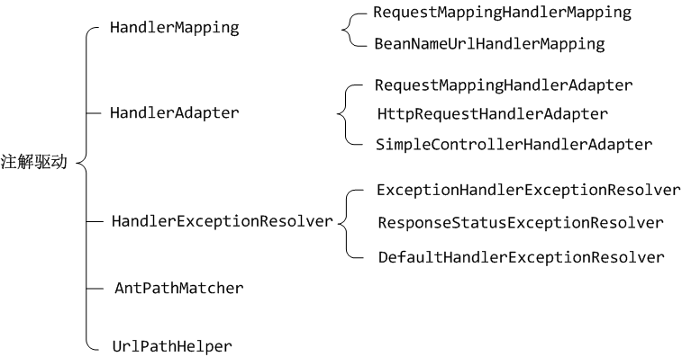
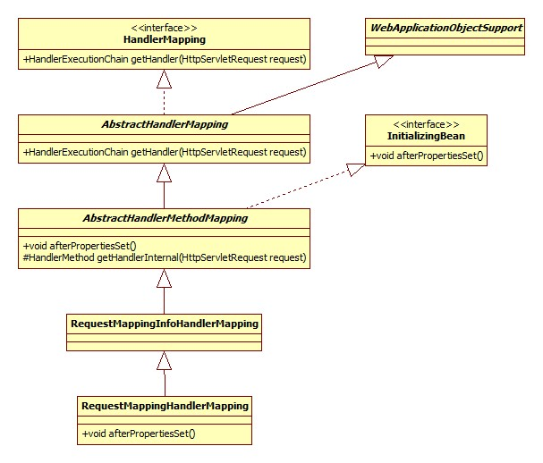
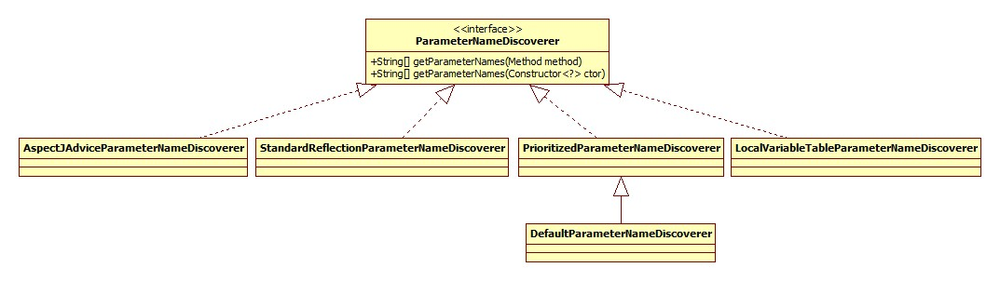
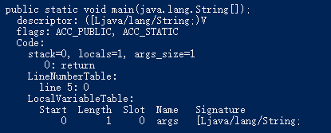
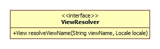
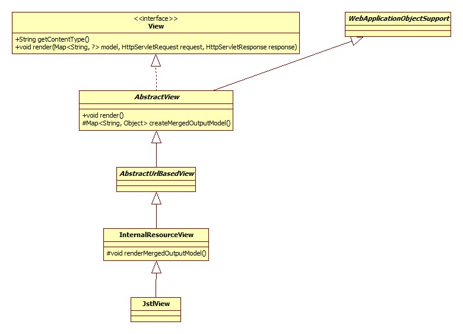
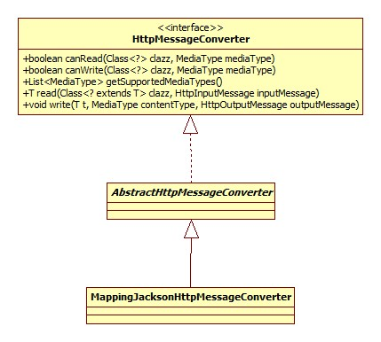
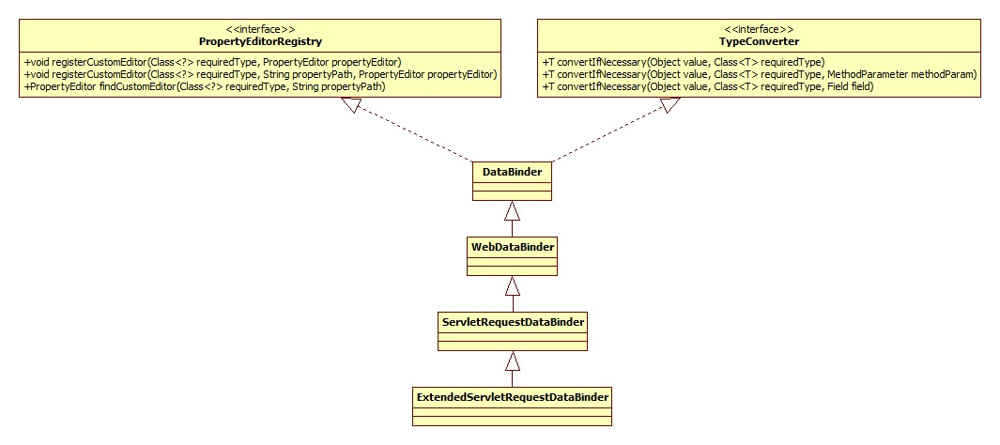
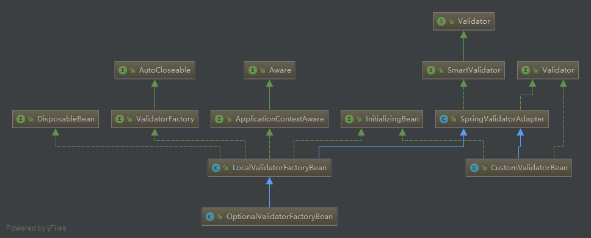

初始化 spring-mvc的核心便是DispatcherServlet，所以初始化也是围绕其展开的。类图:
Servlet标准定义了init方法是其生命周期的初始化方法。
HttpServletBean.init:
1 2 3 4 5 6 7 8 9 10 11 12 13 14 15 @Override public final void init () throws ServletException PropertyValues pvs = new ServletConfigPropertyValues(getServletConfig(), this .requiredProperties); BeanWrapper bw = PropertyAccessorFactory.forBeanPropertyAccess(this ); ResourceLoader resourceLoader = new ServletContextResourceLoader(getServletContext()); bw.registerCustomEditor(Resource.class, new ResourceEditor(resourceLoader, getEnvironment())); initBeanWrapper(bw); bw.setPropertyValues(pvs, true ); initServletBean(); }
主要逻辑一目了然。注意setPropertyValues方法会导致对DispatcherServlet相关setter方法的调用，所以当进行容器初始化时从init-param中读取的参数已被设置到DispatcherServlet的相关字段(Field)中 。
容器初始化 FrameworkServlet.initServletBean简略版源码:
1 2 3 4 5 6 @Override protected final void initServletBean () this .webApplicationContext = initWebApplicationContext(); initFrameworkServlet() }
FrameworkServlet.initWebApplicationContext:
1 2 3 4 5 6 7 8 9 10 11 12 13 14 15 16 17 18 19 20 21 22 23 24 25 26 27 28 29 30 31 32 33 34 protected WebApplicationContext initWebApplicationContext () WebApplicationContext rootContext = WebApplicationContextUtils.getWebApplicationContext(getServletContext()); WebApplicationContext wac = null ; if (this .webApplicationContext != null ) { wac = this .webApplicationContext; if (wac instanceof ConfigurableWebApplicationContext) { ConfigurableWebApplicationContext cwac = (ConfigurableWebApplicationContext) wac; if (!cwac.isActive()) { if (cwac.getParent() == null ) { cwac.setParent(rootContext); } configureAndRefreshWebApplicationContext(cwac); } } } if (wac == null ) { wac = findWebApplicationContext(); } if (wac == null ) { wac = createWebApplicationContext(rootContext); } if (!this .refreshEventReceived) { onRefresh(wac); } if (this .publishContext) { String attrName = getServletContextAttributeName(); getServletContext().setAttribute(attrName, wac); } return wac; }
下面分部分展开。
根容器查找 spring-mvc支持Spring容器与MVC容器共存，此时，Spring容器即根容器，mvc容器将根容器视为父容器。
Spring容器(根容器)以下列形式进行配置(web.xml):
1 2 3 <listener > <listener-class > org.springframework.web.context.ContextLoaderListener</listener-class > </listener >
根据Servlet规范，各组件的加载 顺序如下:
listener -> filter -> servlet
WebApplicationContextUtils.getWebApplicationContext:
1 2 3 4 String ROOT_WEB_APPLICATION_CONTEXT_ATTRIBUTE = WebApplicationContext.class.getName() + ".ROOT" ; public static WebApplicationContext getWebApplicationContext (ServletContext sc) return getWebApplicationContext(sc, WebApplicationContext.ROOT_WEB_APPLICATION_CONTEXT_ATTRIBUTE); }
两参数方法:
1 2 3 4 5 6 7 public static WebApplicationContext getWebApplicationContext (ServletContext sc, String attrName) Object attr = sc.getAttribute(attrName); if (attr == null ) { return null ; } return (WebApplicationContext) attr; }
可以得出结论:
如果Spring根容器存在，那么它被保存在ServletContext中，其key为WebApplicationContext.class.getName() + ".ROOT"。
容器创建 FrameworkServlet.createWebApplicationContext:
1 2 3 4 5 6 7 8 9 10 11 12 13 protected WebApplicationContext createWebApplicationContext (ApplicationContext parent) Class<?> contextClass = getContextClass(); if (!ConfigurableWebApplicationContext.class.isAssignableFrom(contextClass)) { throw new ApplicationContextException(); } ConfigurableWebApplicationContext wac = (ConfigurableWebApplicationContext) BeanUtils.instantiateClass(contextClass); wac.setEnvironment(getEnvironment()); wac.setParent(parent); wac.setConfigLocation(getContextConfigLocation()); configureAndRefreshWebApplicationContext(wac); return wac; }
通过对getContextClass方法的调用，Spring允许我们自定义容器的类型，即我们可以在web.xml中如下配置:
1 2 3 4 5 6 7 8 9 10 11 12 13 14 <servlet > <servlet-name > SpringMVC</servlet-name > <servlet-class > org.springframework.web.servlet.DispatcherServlet</servlet-class > <init-param > <param-name > contextConfigLocation</param-name > <param-value > classpath:spring-servlet.xml</param-value > </init-param > <init-param > <param-name > contextClass</param-name > <param-value > java.lang.Object</param-value > </init-param > </servlet >
configureAndRefreshWebApplicationContext核心源码:
1 2 3 4 protected void configureAndRefreshWebApplicationContext (ConfigurableWebApplicationContext wac) applyInitializers(wac); wac.refresh(); }
ApplicationContextInitializer ApplicationContextInitializer允许我们在Spring(mvc)容器初始化之前干点坏事，可以通过init-param传入:
1 2 3 4 <init-param > <param-name > contextInitializerClasses</param-name > <param-value > 坏事儿</param-value > </init-param >
applyInitializers方法正是要触发这些坏事儿。类图:
配置解析 “配置”指的便是spring-servlet.xml:
1 2 3 4 5 6 7 8 9 10 11 <context:component-scan base-package ="controller" /> <mvc:annotation-driven /> <mvc:default-servlet-handler /> <bean class ="org.springframework.web.servlet.view.UrlBasedViewResolver" > <property name ="viewClass" value ="org.springframework.web.servlet.view.JstlView" > </property > <property name ="prefix" value ="/WEB-INF/" > </property > <property name ="suffix" value =".jsp" > </property > </bean >
而解析的入口便在于对refresh方法的调用，此方法位于AbstractApplicationContext，这一点在spring-core时已经见过了，下面我们重点关注不同于spring-core的地方。
对于spring-mvc来说，其容器默认为XmlWebApplicationContext，部分类图:
XmlWebApplicationContext通过重写loadBeanDefinitions方法改变了bean加载行为，使其指向spring-servlet.xml。
spring-servlet.xml中不同于spring-core的地方便在于引入了mvc命名空间，正如spring-core中笔记中所说的那样，Spring用过jar包/META-INFO中的.handlers文件定义针对不同的命名空间所使用的解析器 。
mvc命名空间的解析器为MvcNamespaceHandler，部分源码:
1 2 3 4 5 6 7 8 @Override public void init () registerBeanDefinitionParser("annotation-driven" , new AnnotationDrivenBeanDefinitionParser()); registerBeanDefinitionParser("default-servlet-handler" , new DefaultServletHandlerBeanDefinitionParser()); registerBeanDefinitionParser("interceptors" , new IanterceptorsBeanDefinitionParser()); registerBeanDefinitionParser("view-resolvers" , new ViewResolversBeanDefinitionParser()); }
老样子，按部分展开。
注解驱动 其parse方法负责向Sprng容器注册一些必要的组件，整理如下图:

静态资源处理 即:
1 <mvc:default-servlet-handler />
DefaultServletHandlerBeanDefinitionParser.parse负责向容器注册以下三个组件:
DefaultServletHttpRequestHandler
SimpleUrlHandlerMapping
HttpRequestHandlerAdapter
拦截器 InterceptorsBeanDefinitionParser.parse方法负责将每一项mvc:interceptor配置解析为一个MappedInterceptor bean并注册到容器中 。
视图 有两种方式向Spring容器注册视图:
以前采用较土的方式:
1 2 3 4 5 6 <bean class ="org.springframework.web.servlet.view.UrlBasedViewResolver" > <property name ="viewClass" value ="org.springframework.web.servlet.view.JstlView" > </property > <property name ="prefix" value ="/WEB-INF/" > </property > <property name ="suffix" value =".jsp" > </property > </bean >
通过特定的标签:
1 2 3 <mvc:view-resolvers > <mvc:jsp view-class ="" /> </mvc:view-resolvers >
从这里可以推测出: 拦截器同样支持第一种方式，Spring在查找时应该会查询某一接口的子类。
ViewResolversBeanDefinitionParser.parse方法的作用便是将每一个视图解析为ViewResolver并注册到容器。
Scope/处理器注册 AbstractRefreshableWebApplicationContext.postProcessBeanFactory:
1 2 3 4 5 6 7 8 9 10 @Override protected void postProcessBeanFactory (ConfigurableListableBeanFactory beanFactory) beanFactory.addBeanPostProcessor( new ServletContextAwareProcessor(this .servletContext, this .servletConfig)); beanFactory.ignoreDependencyInterface(ServletContextAware.class); beanFactory.ignoreDependencyInterface(ServletConfigAware.class); WebApplicationContextUtils.registerWebApplicationScopes(beanFactory, this .servletContext); WebApplicationContextUtils.registerEnvironmentBeans(beanFactory, this .servletContext, this .servletConfig); }
ServletContextAwareProcessor用以向实现了ServletContextAware的bean注册ServletContext。
registerWebApplicationScopes用以注册”request”, “session”, “globalSession”, “application”四种scope，scope是个什么东西以及如何自定义，在spring-core中已经进行过说明了。
registerEnvironmentBeans用以将servletContext、servletConfig以及各种启动参数注册到Spring容器中。
MVC初始化 入口位于DispatcherServlet的initStrategies方法(经由onRefresh调用):
1 2 3 4 5 6 7 8 9 10 11 protected void initStrategies (ApplicationContext context) initMultipartResolver(context); initLocaleResolver(context); initThemeResolver(context); initHandlerMappings(context); initHandlerAdapters(context); initHandlerExceptionResolvers(context); initRequestToViewNameTranslator(context); initViewResolvers(context); initFlashMapManager(context); }
显然，这里就是spring-mvc的核心了。
文件上传支持 initMultipartResolver核心源码:
1 2 3 4 5 6 7 8 private void initMultipartResolver (ApplicationContext context) try { this .multipartResolver = context.getBean(MULTIPART_RESOLVER_BEAN_NAME, MultipartResolver.class); } catch (NoSuchBeanDefinitionException ex) { this .multipartResolver = null ; } }
MultipartResolver用于开启Spring MVC文件上传功能，其类图:
也就是说，如果我们要使用文件上传功能，须在容器中注册一个MultipartResolver bean。当然，默认是没有的。
地区解析器 LocaleResolver接口定义了Spring MVC如何获取客户端(浏览器)的地区，initLocaleResolver方法在容器中寻找此bean，如果没有，注册AcceptHeaderLocaleResolver，即根据request的请求头Accept-Language 获取地区。
spring-mvc采用了属性文件的方式配置默认策略(即bean)，此文件位于spring-mvc的jar包的org.springframework.web.servlet下。
主题解析器 ThemeResolver接口配合Spring标签库使用可以通过动态决定使用的css以及图片的方式达到换肤的效果，其类图:
如果容器中不存在叫做themeResolver的bean，initThemeResolver方法将向容器中注册FixedThemeResolver，此bean只能提供一套默认的主题，名为theme。
HandlerMapping检查 initHandlerMappings方法用于确保容器中至少含有一个HandlerMapping对象 。从前面配置解析-注解驱动一节中可以看出，注解驱动导致已经注册了两个此对象。
如果没有开启注解驱动，那么将会使用默认的HandlerMapping，相关源码:
1 2 3 4 5 6 if (this .handlerMappings == null ) { this .handlerMappings = getDefaultStrategies(context, HandlerMapping.class); if (logger.isDebugEnabled()) { logger.debug("No HandlerMappings found in servlet '" + getServletName() + "': using default" ); } }
前面提到了，默认的策略由DispatcherServlet.properties决定，目前是BeanNameUrlHandlerMapping和DefaultAnnotationHandlerMapping 。
HandlerAdapter检查 套路和上面完全一样，默认使用HttpRequestHandlerAdapter、SimpleControllerHandlerAdapter和AnnotationMethodHandlerAdapter。
HandlerExceptionResolver检查 套路和上面完全一样，默认使用AnnotationMethodHandlerExceptionResolver、ResponseStatusExceptionResolver、DefaultHandlerExceptionResolver。
RequestToViewNameTranslator initRequestToViewNameTranslator方法回向容器中注册一个DefaultRequestToViewNameTranslator对象，此接口用以完成从HttpServletRequest到视图名的解析，其使用场景是给定的URL无法匹配任何控制器时 。
DefaultRequestToViewNameTranslator的转换例子:
http://localhost:8080/gamecast/display.html -> display(视图)
其类图:
ViewResolver检查 熟悉的套路，默认使用InternalResourceViewResolver。
FlashMapManager initFlashMapManager方法会向容器注册SessionFlashMapManager对象，类图:
此接口和FlashMap搭配使用，用于在请求重定向时保存/传递参数 。
HandlerMapping初始化 此接口用以根据请求的URL寻找合适的处理器。从前面配置解析一节可以看出，我们的容器中有三个HandlerMapping实现，下面以RequestMappingHandlerMapping位代表进行说明。
RequestMappingHandlerMapping 此实现根据@Controller和@RequestMapping注解完成解析。类图(忽略部分接口):

初始化的入口位于AbstractHandlerMethodMapping的afterPropertiesSet方法和AbstractHandlerMapping的initApplicationContext方法，afterPropertiesSet调用了initHandlerMethods:
1 2 3 4 5 6 7 8 9 10 11 12 13 14 15 16 17 18 protected void initHandlerMethods () String[] beanNames = (this .detectHandlerMethodsInAncestorContexts ? BeanFactoryUtils.beanNamesForTypeIncludingAncestors(getApplicationContext(), Object.class) :getApplicationContext().getBeanNamesForType(Object.class)); for (String beanName : beanNames) { if (!beanName.startsWith(SCOPED_TARGET_NAME_PREFIX)) { Class<?> beanType = null ; beanType = getApplicationContext().getType(beanName); if (beanType != null && isHandler(beanType)) { detectHandlerMethods(beanName); } } } handlerMethodsInitialized(getHandlerMethods()); }
detectHandlerMethods方法将反射遍历类中所有的public方法，如果方法上含有@RequestMapping注解，那么将方法上的路径与类上的基础路径(如果有)进行合并，之后将映射(匹配关系)注册到MappingRegistry中。
注意，类上的@RequestMapping注解只能作为基路径存在，也就是说，如果类里面没有任何的方法级@RequestMapping注解，那么类上的注解是没有意义的 。这一点可以从实验和源码上得到证实。
下面我们关注一下映射关系是如何保存(注册)的。
内部类AbstractHandlerMethodMapping.MappingRegistry是映射的载体，类图:
其register方法简略版源码:
1 2 3 4 5 6 7 8 9 10 11 12 13 14 15 16 17 18 19 public void register (T mapping, Object handler, Method method) HandlerMethod handlerMethod = createHandlerMethod(handler, method); this .mappingLookup.put(mapping, handlerMethod); List<String> directUrls = getDirectUrls(mapping); for (String url : directUrls) { this .urlLookup.add(url, mapping); } String name = null ; if (getNamingStrategy() != null ) { name = getNamingStrategy().getName(handlerMethod, mapping); addMappingName(name, handlerMethod); } CorsConfiguration corsConfig = initCorsConfiguration(handler, method, mapping); if (corsConfig != null ) { this .corsLookup.put(handlerMethod, corsConfig); } this .registry.put(mapping, new MappingRegistration<T>(mapping, handlerMethod, directUrls, name)); }
mapping其实是一个RequestMappingInfo对象，可以将其看做是@RequestMapping注解各种属性的一个封装 。最终由RequestMappingInfo.createRequestMappingInfo方法创建，源码:
1 2 3 4 5 6 7 8 9 10 11 12 13 14 protected RequestMappingInfo createRequestMappingInfo ( RequestMapping requestMapping, RequestCondition<?> customCondition) return RequestMappingInfo .paths(resolveEmbeddedValuesInPatterns(requestMapping.path())) .methods(requestMapping.method()) .params(requestMapping.params()) .headers(requestMapping.headers()) .consumes(requestMapping.consumes()) .produces(requestMapping.produces()) .mappingName(requestMapping.name()) .customCondition(customCondition) .options(this .config) .build(); }
这就很明显了，具体每种属性什么意义可以参考@RequestMapping源码。
register方法中urlLookup其实就是将paths属性中的每个path都与处理器做映射。
getNamingStrategy方法得到的是一个HandlerMethodMappingNamingStrategy接口的实例，此接口用以根据HandlerMethod得到一个名字，类图:
比如对于我们的控制器,SimpleController.echo方法，最终得到的名字将是SC#echo。
跨域请求 spring-mvc自4.2开启加入了跨域请求Cors的支持，主要有两种配置方式:
xml:
1 2 3 <mvc:cors > <mvc:mapping path ="" /> </mvc:cors >
@CrossOrigin注解。
Cors的原理可以参考:
探讨跨域请求资源的几种方式
而initCorsConfiguration方法的作用便是将@CrossOrigin注解的各种属性封装在CorsConfiguration中。
拦截器初始化 AbstractHandlerMapping.initApplicationContext:
1 2 3 4 @Override protected void initApplicationContext () throws BeansException detectMappedInterceptors(this .adaptedInterceptors); }
作用就是从容器中获取所有MappedInterceptor bean并放到adaptedInterceptors中，前面提到过了，我们使用mvc:interceptor定义的拦截器其实就是MappedInterceptor对象。类图:
HandlerAdapter初始化 同样，我们以RequestMappingHandlerAdapter为例进行说明，类图:
显然，入口在afterPropertiesSet方法:
1 2 3 4 5 6 7 8 9 10 11 12 13 14 15 16 17 18 19 20 @Override public void afterPropertiesSet () initControllerAdviceCache(); if (this .argumentResolvers == null ) { List<HandlerMethodArgumentResolver> resolvers = getDefaultArgumentResolvers(); this .argumentResolvers = new HandlerMethodArgumentResolverComposite() .addResolvers(resolvers); } if (this .initBinderArgumentResolvers == null ) { List<HandlerMethodArgumentResolver> resolvers = getDefaultInitBinderArgumentResolvers(); this .initBinderArgumentResolvers = new HandlerMethodArgumentResolverComposite() .addResolvers(resolvers); } if (this .returnValueHandlers == null ) { List<HandlerMethodReturnValueHandler> handlers = getDefaultReturnValueHandlers(); this .returnValueHandlers = new HandlerMethodReturnValueHandlerComposite() .addHandlers(handlers); } }
@ControllerAdvice initControllerAdviceCache方法用以解析并存储标注了@ControllerAdvice的bean，这东西是干什么的参考：
Spring3.2新注解@ControllerAdvice
参数解析器 HandlerMethodArgumentResolver即参数解析器，负责从request中解析、得到Controller方法所需的参数。afterPropertiesSet方法设置了一组默认的解析器。具体是哪些参考getDefaultArgumentResolvers方法。类图:
@InitBinder支持 此注解定义的其实是自定义类型转换器。使用方法参考:
springMVC @initBinder 使用
getDefaultInitBinderArgumentResolvers返回了一组默认使用的转换器，不过其实这里的转换器和上面的参数解析器其实是一个类型的，这里留个坑。
返回结果解析器 HandlerMethodReturnValueHandler接口用以处理方法调用(Controller方法)的返回值，类图:
getDefaultReturnValueHandlers方法便返回了一坨这东西。
请求响应 我们先来看一下入口在哪。众所周知，Servlet标准定义了所有请求先由service方法处理，如果是get或post方法，那么再交由doGet或是doPost方法处理。
FrameworkServlet覆盖了service方法:
1 2 3 4 5 6 7 8 9 @Override protected void service (HttpServletRequest request, HttpServletResponse response) HttpMethod httpMethod = HttpMethod.resolve(request.getMethod()); if (HttpMethod.PATCH == httpMethod || httpMethod == null ) { processRequest(request, response); } else { super .service(request, response); } }
Spring要覆盖此方法的目的在于拦截PATCH请求，PATCH请求与PUT类似，不同在于PATCH是局部更新，而后者是全部更新。可以参考:
PATCH和PUT方法的区别？
FrameworkServlet同样也覆盖了doGet和doPost方法，两者只是调用processRequest方法。
请求上下文 Spring MVC会在请求分发之前进行上下文的准备工作，含两部分:
将地区(Locale)和请求属性以ThreadLocal的方法与当前线程进行关联，分别可以通过LocaleContextHolder和RequestContextHolder进行获取。
将WebApplicationContext、FlashMap等组件放入到Request属性中。
请求分发 DispatcherServlet.doDispatch简略版源码:
1 2 3 4 5 6 7 8 protected void doDispatch (HttpServletRequest request, HttpServletResponse response) HandlerExecutionChain mappedHandler = getHandler(processedRequest); HandlerAdapter ha = getHandlerAdapter(mappedHandler.getHandler()); mv = ha.handle(processedRequest, response, mappedHandler.getHandler()); applyDefaultViewName(processedRequest, mv); mappedHandler.applyPostHandle(processedRequest, response, mv); processDispatchResult(processedRequest, response, mappedHandler, mv, dispatchException); }
处理器查找 即为请求寻找合适的Controller的过程。DispatcherServlet.getHandler:
1 2 3 4 5 6 7 8 9 protected HandlerExecutionChain getHandler (HttpServletRequest request) for (HandlerMapping hm : this .handlerMappings) { HandlerExecutionChain handler = hm.getHandler(request); if (handler != null ) { return handler; } } return null ; }
从这里可以看出，寻找处理器实际上委托给HandlerMapping实现，寻找的过程便是遍历所有的HandlerMapping进行查找，一旦找到，那么不再继续进行遍历 。也就是说HandlerMapping之间有优先级的概念，而根据AnnotationDrivenBeanDefinitionParser的注释，RequestMappingHandlerMapping其实有最高的优先级。
AbstractHandlerMapping.getHandler:
1 2 3 4 5 6 7 8 9 10 11 12 13 14 @Override public final HandlerExecutionChain getHandler (HttpServletRequest request) throws Exception Object handler = getHandlerInternal(request); HandlerExecutionChain executionChain = getHandlerExecutionChain(handler, request); if (CorsUtils.isCorsRequest(request)) { CorsConfiguration globalConfig = this .corsConfigSource.getCorsConfiguration(request); CorsConfiguration handlerConfig = getCorsConfiguration(handler, request); CorsConfiguration config = (globalConfig != null ? globalConfig.combine(handlerConfig) : handlerConfig); executionChain = getCorsHandlerExecutionChain(request, executionChain, config); } return executionChain; }
getHandlerInternal方法便是根据url进行查找的过程，可以参见MVC初始化-HandlerMapping初始化一节。下面重点是执行链的生成。
getHandlerExecutionChain方法的原理就是从adaptedInterceptors中获得所有可以适配当前请求URL的MappedInterceptor并将其添加到HandlerExecutionChain的拦截器列表中。拦截器的顺序其实就是我们定义/注册的顺序。
从getCorsHandlerExecutionChain的源码中可以看出，对于跨域请求其实是向调用链插入了一个CorsInterceptor。
适配器查找 DispatcherServlet.getHandlerAdapter:
1 2 3 4 5 6 7 protected HandlerAdapter getHandlerAdapter (Object handler) for (HandlerAdapter ha : this .handlerAdapters) { if (ha.supports(handler)) { return ha; } } }
从前面配置解析-注解驱动可以看出，第一个适配器是RequestMappingHandlerAdapter，而其support方法直接返回true，这就导致了使用的适配器总是这一个。
请求处理 RequestMappingHandlerAdapter.handleInternal:
1 2 3 4 5 6 7 8 9 10 11 12 13 14 15 16 17 18 19 20 21 22 23 24 25 26 27 28 29 30 @Override protected ModelAndView handleInternal (HttpServletRequest request, HttpServletResponse response, HandlerMethod handlerMethod) ModelAndView mav; if (this .synchronizeOnSession) { HttpSession session = request.getSession(false ); if (session != null ) { Object mutex = WebUtils.getSessionMutex(session); synchronized (mutex) { mav = invokeHandlerMethod(request, response, handlerMethod); } } else { mav = invokeHandlerMethod(request, response, handlerMethod); } } else { mav = invokeHandlerMethod(request, response, handlerMethod); } if (!response.containsHeader(HEADER_CACHE_CONTROL)) { if (getSessionAttributesHandler(handlerMethod).hasSessionAttributes()) { applyCacheSeconds(response, this .cacheSecondsForSessionAttributeHandlers); } else { prepareResponse(response); } } return mav; }
Session同步 可以看出，如果开启了synchronizeOnSession，那么同一个session的请求将会串行执行 ，这一选项默认是关闭的，当然我们可以通过注入的方式进行改变。
参数解析 策略模式 正如前面HandlerAdapter初始化-参数解析器一节提到的，HandlerAdapter内部含有一组解析器负责对各类型的参数进行解析。下面我们就常用的自定义参数和Model为例进行说明。
自定义参数 解析由RequestParamMethodArgumentResolver完成。
supportsParameter方法决定了一个解析器可以解析的参数类型，该解析器支持@RequestParam标准的参数或是简单类型 的参数，具体参见其注释。为什么此解析器可以同时解析@RequestParam注解和普通参数呢?玄机在于RequestMappingHandlerAdapter方法在初始化参数解析器时其实初始化了两个RequestMappingHandlerAdapter对象 ，getDefaultArgumentResolvers方法相关源码:
1 2 3 4 5 private List<HandlerMethodArgumentResolver> getDefaultArgumentResolvers () resolvers.add(new RequestPartMethodArgumentResolver(getMessageConverters(), this .requestResponseBodyAdvice)); resolvers.add(new RequestParamMethodArgumentResolver(getBeanFactory(), true )); }
useDefaultResolution参数用于启动对常规类型参数的解析，这里的常规类型指的又是什么呢?
实际上由BeanUtils.isSimpleProperty方法决定:
1 2 3 4 5 6 7 8 9 10 11 12 13 public static boolean isSimpleProperty (Class<?> clazz) Assert.notNull(clazz, "Class must not be null" ); return isSimpleValueType(clazz) || (clazz.isArray() && isSimpleValueType(clazz.getComponentType())); } public static boolean isSimpleValueType (Class<?> clazz) return (ClassUtils.isPrimitiveOrWrapper(clazz) || clazz.isEnum() || CharSequence.class.isAssignableFrom(clazz) || Number.class.isAssignableFrom(clazz) || Date.class.isAssignableFrom(clazz) || URI.class == clazz || URL.class == clazz || Locale.class == clazz || Class.class == clazz); }
忽略复杂的调用关系，最核心的实现位于resolveName方法，部分源码:
1 2 3 4 5 6 7 8 9 10 @Override protected Object resolveName (String name, MethodParameter parameter, NativeWebRequest request) if (arg == null ) { String[] paramValues = request.getParameterValues(name); if (paramValues != null ) { arg = (paramValues.length == 1 ? paramValues[0 ] : paramValues); } } return arg; }
name就是方法的参数名，可以看出，参数解析就是根据参数名去request查找对应属性的过程 ，在这里参数类型并没有起什么作用。
参数名是从哪里来的 方法名获取的入口位于RequestParamMethodArgumentResolver的resolveArgument方法:
1 2 3 4 5 @Override public final Object resolveArgument (MethodParameter parameter, ModelAndViewContainer mavContainer, NativeWebRequest webRequest, WebDataBinderFactory binderFactory) throws Exception NamedValueInfo namedValueInfo = getNamedValueInfo(parameter); }
getNamedValueInfo方法最终完成对MethodParameter的getParameterName方法的调用:
1 2 3 4 5 6 7 8 9 10 11 12 public String getParameterName () ParameterNameDiscoverer discoverer = this .parameterNameDiscoverer; if (discoverer != null ) { String[] parameterNames = (this .method != null ? discoverer.getParameterNames(this .method) : discoverer.getParameterNames(this .constructor)); if (parameterNames != null ) { this .parameterName = parameterNames[this .parameterIndex]; } this .parameterNameDiscoverer = null ; } return this .parameterName; }
显然，参数名的获取由接口ParameterNameDiscoverer完成:

默认采用DefaultParameterNameDiscoverer，但此类其实相当于StandardReflectionParameterNameDiscoverer和LocalVariableTableParameterNameDiscoverer的组合，且前者先于后者进行解析。
StandardReflectionParameterNameDiscoverer.getParameterNames:
1 2 3 4 5 6 7 8 9 10 11 12 13 @Override public String[] getParameterNames(Method method) { Parameter[] parameters = method.getParameters(); String[] parameterNames = new String[parameters.length]; for (int i = 0 ; i < parameters.length; i++) { Parameter param = parameters[i]; if (!param.isNamePresent()) { return null ; } parameterNames[i] = param.getName(); } return parameterNames; }
此类被注解UsesJava8标注，其原理就是利用的jdk8的-parameters编译参数，只有在加上此选项的情况下才能用反射的方法获得真实的参数名，所以一般情况下StandardReflectionParameterNameDiscoverer是无法成功获取参数名的。
LocalVariableTableParameterNameDiscoverer利用了ASM直接访问class文件中的本地变量表来得到变量名，下面是使用javap -verbose命令得到的本地变量表示例:

但是默认情况下javac compiler是不生成本地变量表这种调试信息的，需要加-g参数才可以，那为什么在我们的测试Controller中却可以获得呢，玄机就在于idea的下列设置:
取消这项设置的勾选再次运行程序便出问题了:
Model 解析由ModelMethodProcessor完成。
supportsParameter方法很简单:
1 2 3 4 @Override public boolean supportsParameter (MethodParameter parameter) return Model.class.isAssignableFrom(parameter.getParameterType()); }
很直白了。
resolveArgument：
1 2 3 4 5 @Override public Object resolveArgument (MethodParameter parameter, ModelAndViewContainer mavContainer, NativeWebRequest webRequest, WebDataBinderFactory binderFactory) throws Exception return mavContainer.getModel(); }
忽略各种调用关系，Model其实是一个BindingAwareModelMap对象，且每次请求(需要注入Model的前提下)都有一个新的该对象生成 。类图:
总结
我们可以通过实现HandlerMethodArgumentResolver接口并将其注册容器的方式实现自定义参数类型的解析。
为了防止出现参数名获取不到的问题，应优先使用@RequestParam注解直接声明需要的参数名称。
返回值解析 套路和上面是一样的，通常情况，我们返回的其实是view名，负责处理的是ViewNameMethodReturnValueHandler，
supportsReturnType方法:
1 2 3 4 5 @Override public boolean supportsReturnType (MethodParameter returnType) Class<?> paramType = returnType.getParameterType(); return (void .class == paramType || CharSequence.class.isAssignableFrom(paramType)); }
handleReturnValue:
1 2 3 4 5 6 7 8 9 10 11 12 @Override public void handleReturnValue (Object returnValue, MethodParameter returnType, ModelAndViewContainer mavContainer, NativeWebRequest webRequest) if (returnValue instanceof CharSequence) { String viewName = returnValue.toString(); mavContainer.setViewName(viewName); if (isRedirectViewName(viewName)) { mavContainer.setRedirectModelScenario(true ); } } }
可见这里并没有进行实际的处理，只是解析得到了最终的视图名称。
视图渲染 由DispatcherServlet的processDispatchResult方法完成，源码:
1 2 3 4 5 6 7 8 9 10 11 12 13 14 15 16 17 18 19 20 21 private void processDispatchResult (HttpServletRequest request, HttpServletResponse response, HandlerExecutionChain mappedHandler, ModelAndView mv, Exception exception) boolean errorView = false ; if (exception != null ) { if (exception instanceof ModelAndViewDefiningException) { mv = ((ModelAndViewDefiningException) exception).getModelAndView(); } else { Object handler = (mappedHandler != null ? mappedHandler.getHandler() : null ); mv = processHandlerException(request, response, handler, exception); errorView = (mv != null ); } } if (mv != null && !mv.wasCleared()) { render(mv, request, response); if (errorView) { WebUtils.clearErrorRequestAttributes(request); } } }
可以看出，处理根据是否抛出异常分为了两种情况 。
如果抛出了异常，那么processHandlerException方法将会遍历所有的HandlerExceptionResolver实例，默认有哪些参考MVC初始化-HandlerExceptionResolver检查一节。默认的处理器用于改变响应状态码、调用标注了@ExceptionHandler的bean进行处理，如果没有@ExceptionHandler的bean或是不能处理此类异常，那么就会导致ModelAndView始终为null，最终Spring MVC将异常向上抛给Tomcat，然后Tomcat就会把堆栈打印出来。
如果我们想将其定向到指定的错误页面，可以这样配置:
1 2 3 <bean class ="org.springframework.web.servlet.handler.SimpleMappingExceptionResolver" > <property name ="defaultErrorView" value ="error" > </property > </bean >
此处理器会返回一个非空的ModelAndView。
ModelAndView 回过头来看一下这到底是个什么东西。类图:
很直白。
怎么生成的。RequestMappingHandlerAdapter.getModelAndView相关源码:
1 2 ModelMap model = mavContainer.getModel(); ModelAndView mav = new ModelAndView(mavContainer.getViewName(), model, mavContainer.getStatus());
渲染 DispatcherServlet.render简略版源码:
1 2 3 4 5 6 7 8 9 10 11 12 13 14 15 16 17 protected void render (ModelAndView mv, HttpServletRequest request, HttpServletResponse response) Locale locale = this .localeResolver.resolveLocale(request); response.setLocale(locale); View view; if (mv.isReference()) { view = resolveViewName(mv.getViewName(), mv.getModelInternal(), locale, request); } else { view = mv.getView(); } if (mv.getStatus() != null ) { response.setStatus(mv.getStatus().value()); } view.render(mv.getModelInternal(), request, response); }
resolveViewName方法将会遍历所有的ViewResolver bean，只要有一个解析的结果(View)不为空，即停止遍历。根据MVC初始化-ViewResolver检查一节和我们的配置文件可知，容器中有两个ViewResolver ，分别是: InternalResourceViewResolver和UrlBasedViewResolver。
ViewResolver 类图(忽略实现类):

resolveViewName方法的源码不再贴出，其实只做了一件事: 用反射创建并初始化我们指定的View，根据我们的配置，就是JstlView。
View 类图:

渲染的核心逻辑位于InternalResourceView.renderMergedOutputModel，简略版源码:
1 2 3 4 5 6 7 8 9 10 11 12 13 14 15 16 17 18 @Override protected void renderMergedOutputModel ( Map<String, Object> model, HttpServletRequest request, HttpServletResponse response) exposeModelAsRequestAttributes(model, request); String dispatcherPath = prepareForRendering(request, response); RequestDispatcher rd = getRequestDispatcher(request, dispatcherPath); if (useInclude(request, response)) { response.setContentType(getContentType()); rd.include(request, response); } else { rd.forward(request, response); } }
可以看出，对jsp来说，所谓的渲染其实就是将Model中的属性设置到Request，再利用原生Servlet RequestDispatcher API进行转发的过程 。
拾遗 @ResponseBody 通常我们可以在Controller或方法上标注@ResponseBody注解以表示需要将对象转为JSON并返回给前端，那么Spring MVC是如何自动完成这一过程的呢?
从前面初始化-容器初始化-容器创建-配置解析一节可以看出，Spring MVC采用org.springframework.web.servlet.config.AnnotationDrivenBeanDefinitionParser进行配置的解析，核心的parse方法中完成了对HttpMessageConverter的初始化。
HttpMessageConverter Spring的HttpMessageConverter接口负责HTTP请求-Java对象与Java对象-响应之间的转换。我们以Spring默认使用的Jackson转换器为例，类图:

HttpMessageConverter实现的初始化由AnnotationDrivenBeanDefinitionParser的getMessageConverters方法完成，HttpMessageConverter的来源分为自定义和默认。
示例配置:
1 2 3 4 5 <mvc:annotation-driven > <mvc:message-converters register-defaults ="true" > <bean class ="test.Converter" /> </mvc:message-converters > </mvc:annotation-driven >
自定义 Spring允许我们通过XML配置文件的message-converters元素来进行自定义。
默认 当检测到没有配置message-converters元素或者register-defaults=”true”时Spring便会注册默认转换器 。这其中便包括MappingJacksonHttpMessageConverter，相关源码:
1 2 3 4 else if (jacksonPresent) { messageConverters.add(createConverterDefinition( org.springframework.http.converter.json.MappingJacksonHttpMessageConverter.class, source)); }
jacksonPresent声明:
1 2 3 private static final boolean jacksonPresent = ClassUtils.isPresent("org.codehaus.jackson.map.ObjectMapper" , AnnotationDrivenBeanDefinitionParser.class.getClassLoader()) && ClassUtils.isPresent("org.codehaus.jackson.JsonGenerator" , AnnotationDrivenBeanDefinitionParser.class.getClassLoader());
转换 入口位于ServletInvocableHandlerMethod的invokeAndHandle方法对于响应的处理:
1 this .returnValueHandlers.handleReturnValue(returnValue, getReturnValueType(returnValue), mavContainer, webRequest);
returnValueHandlers其实就是RequestMappingHandlerAdapter内部的returnValueHandlers，后者由RequestMappingHandlerAdapter的afterPropertiesSet方法初始化，关键在于:
1 handlers.add(new RequestResponseBodyMethodProcessor(getMessageConverters(), this .contentNegotiationManager));
对象到JSON的转换正是由RequestResponseBodyMethodProcessor完成，ServletInvocableHandlerMethod通过supportsReturnType方法决定HandlerMethodReturnValueHandler是否可以处理当前返回类型或返回方法，RequestResponseBodyMethodProcessor的实现:
1 2 3 4 5 @Override public boolean supportsReturnType (MethodParameter returnType) return ((AnnotationUtils.findAnnotation(returnType.getContainingClass(), ResponseBody.class) != null ) || (returnType.getMethodAnnotation(ResponseBody.class) != null )); }
核心的handleReturnValue方法:
1 2 3 4 5 6 7 8 @Override public void handleReturnValue (Object returnValue, MethodParameter returnType, ModelAndViewContainer mavContainer, NativeWebRequest webRequest) mavContainer.setRequestHandled(true ); if (returnValue != null ) { writeWithMessageConverters(returnValue, returnType, webRequest); } }
这里其实是通过HttpMessageConverter的canRead或canWrite方法来判断给定的转换器是否合适，canWrite方法实现:
1 2 3 4 @Override public boolean canWrite (Class<?> clazz, MediaType mediaType) return (this .objectMapper.canSerialize(clazz) && canWrite(mediaType)); }
这里剩下的便是Jackson的事情了，注意MappingJacksonHttpMessageConverter中的objectMapper被所有的线程所共享，因为其是线程安全的，但是这样是否有性能问题?
参数解析 & 结果转换 Spring MVC中参数到各种类型的转换由HandlerMethodArgumentResolver接口完成，而Controller返回值到真正的响应的转换由HandlerMethodReturnValueHandler接口完成。两者分别负责Spring MVC中数据的输入与输出，可用下图表示:
HandlerMethodArgumentResolver接口及其主要实现类如下图:
HandlerMethodReturnValueHandler接口以及主要实现类如下:
其实有很多类同时实现了两个接口，比如RequestResponseBodyMethodProcessor，这样的类一般以Processor结尾。
两种转换器的初始化由HandlerAdapter完成，这也很好的体现了HandlerAdapter接口的功能。以喜闻乐见的RequestMappingHandlerAdapter为例，其初始化的HandlerMethodReturnValueHandler列表如下:
ModelAndViewMethodReturnValueHandler
ModelMethodProcessor
HttpEntityMethodProcessor
HttpHeadersReturnValueHandler
CallableMethodReturnValueHandler
DeferredResultMethodReturnValueHandler
AsyncTaskMethodReturnValueHandler
ListenableFutureReturnValueHandler
ModelAttributeMethodProcessor
RequestResponseBodyMethodProcessor
ViewNameMethodReturnValueHandler
MapMethodProcessor
ModelAndViewResolverMethodReturnValueHandler
从中也可以推测出我们可以把哪些类型的值(对象)直接”丢给”Spring。
对于HandlerMethodArgumentResolver和HandlerMethodReturnValueHandler来说，HttpMessageConverter像是两者手中用来实现功能的武器。
“纯”对象参数接收 假设有如下这样的Controller:
1 2 3 4 5 @RequestMapping ("/echoAgain" )public String echo (SimpleModel simpleModel, Model model) model.addAttribute("echo" , "hello " + simpleModel.getName() + ", your age is " + simpleModel.getAge() + "." ); return "echo" ; }
经过测试可以发现，SimpleModel参数既可以接收get请求，也可以接收post请求。那么在这种情况下请求参数是被哪个参数解析器解析的呢，debug发现: ServletModelAttributeMethodProcessor：
核心的supportsParameter方法由父类ModelAttributeMethodProcessor实现:
1 2 3 4 5 @Override public boolean supportsParameter (MethodParameter parameter) return (parameter.hasParameterAnnotation(ModelAttribute.class) || (this .annotationNotRequired && !BeanUtils.isSimpleProperty(parameter.getParameterType()))); }
可以看出，这里支持带有ModelAttribute注解或者是非基本类型的参数解析，同时annotationNotRequired必须设为false，即ModelAttribute注解不必存在，这里是在ServletModelAttributeMethodProcessor的构造器中进行控制的，
1 resolvers.add(new ServletModelAttributeMethodProcessor(false ));
此类的作用是对@ModelAttribute注解标注的参数进行解析，假设我们将Controller方法改写成:
1 2 3 4 5 6 @RequestMapping ("/echoAgain" )public String echo (@ModelAttribute SimpleModel simpleModel, Model model) model.addAttribute("echo" , "hello " + simpleModel.getName() + ", your age is " + simpleModel.getAge() + "." ); System.out.println(model.asMap().get("simpleModel" )); return "echo" ; }
首先，Spring会首先反射生成一个SimpleModel对象，之后将从request中获取的参数尝试设置到SimpleModel对象中去，最后将此对象放置到Model中(本质上就是一个Map)，key就是simpleModel.下面我们来看一下具体的解析过程，整个过程可以分为
参数对象构造 因为SimpleModel是一个对象类型，所以要想将参数注入到其中，第一步必然是先创建一个对象，创建的入口位于ModelAttributeMethodProcessor的resolveArgument方法，相关源码:
1 2 3 4 String name = ModelFactory.getNameForParameter(parameter); Object attribute = (mavContainer.containsAttribute(name) ? mavContainer.getModel().get(name) : createAttribute(name, parameter, binderFactory, webRequest));
ModelAndViewContainer是个什么东西呢，从名字就可以看出就，它是Spring MVC里两个重要概念Model和View的组合体，用来记录在请求响应过程中Model和View的变化，在这里可以简单理解为去Model中检查有没有叫simpleModel的属性已经存在。
参数绑定 这里使用到了DataBinder接口，按照注释的说明，此接口用以向执行的对象中设置属性值 ，就是这么简单，其继承体系如下图:

WebDataBinderFactory接口用以创建WebDataBinder对象，其继承体系如下图:
默认使用的是ServletRequestDataBinderFactory，创建了一个ExtendedServletRequestDataBinder对象:
1 2 3 4 @Override protected ServletRequestDataBinder createBinderInstance (Object target, String objectName, NativeWebRequest request) return new ExtendedServletRequestDataBinder(target, objectName); }
参数绑定的入口位于ModelAttributeMethodProcessor.resolveArgument方法，相关源码:
1 2 3 if (!mavContainer.isBindingDisabled(name)) { bindRequestParameters(binder, webRequest); }
接下来由ServletRequestDataBinder的bind方法完成，核心源码:
1 2 3 4 public void bind (ServletRequest request) MutablePropertyValues mpvs = new ServletRequestParameterPropertyValues(request); doBind(mpvs); }
在ServletRequestParameterPropertyValues构造器中获取了Request中所有的属性对。doBind方法便是调用前面初始化的目标对象的setter方法进行参数设置的过程，不再展开。
参数校验 将我们的Controller方法改写为下面这种形式便可以启动Spring MVC的参数校验:
1 2 3 4 5 6 @RequestMapping ("/echoAgain" )public String echo (@Validated SimpleModel simpleModel, Model model) model.addAttribute("echo" , "hello " + simpleModel.getName() + ", your age is " + simpleModel.getAge() + "." ); System.out.println(model.asMap().get("simpleModel" )); return "echo" ; }
在这里@Validated注解可以用@Valid(javax)替换，前者是Spring对java校验标准的扩充，增加了校验组的支持。@Validated和@valid注解不会影响Spring MVC参数解析的行为，被这两个注解标注的对象仍是由参数绑定一节提到的解析器进行解析。
当参数校验绑定之后，Spring MVC会尝试对参数进行校验，如果我们设置了校验注解。ModelAttributeMethodProcessor.resolveArgument方法相关源码:
1 2 3 4 5 6 7 8 9 10 11 12 13 14 validateIfApplicable(binder, parameter); protected void validateIfApplicable (WebDataBinder binder, MethodParameter methodParam) Annotation[] annotations = methodParam.getParameterAnnotations(); for (Annotation ann : annotations) { Validated validatedAnn = AnnotationUtils.getAnnotation(ann, Validated.class); if (validatedAnn != null || ann.annotationType().getSimpleName().startsWith("Valid" )) { Object hints = (validatedAnn != null ? validatedAnn.value() : AnnotationUtils.getValue(ann)); Object[] validationHints = (hints instanceof Object[] ? (Object[]) hints : new Object[] {hints}); binder.validate(validationHints); break ; } } }
DataBinder.validate:
1 2 3 4 5 6 7 8 9 public void validate (Object... validationHints) for (Validator validator : getValidators()) { if (!ObjectUtils.isEmpty(validationHints) && validator instanceof SmartValidator) { ((SmartValidator) validator).validate(getTarget(), getBindingResult(), validationHints); } else if (validator != null ) { validator.validate(getTarget(), getBindingResult()); } } }
可见，具体的校验交给了org.springframework.validation.Validator实现，类图:

getValidators方法获取的实际上是DataBinder内部的validators字段:
1 private final List<Validator> validators = new ArrayList<Validator>();
根据这里的校验器的来源可以分为以下两种情况。
JSR校验 需要引入hibernate-validator到classpath中，回顾最前面配置解析部分，配置:
1 <mvc:annotation-driven />
会利用AnnotationDrivenBeanDefinitionParser进行相关的解析、初始化工作，正是在其parse方法完成了对JSR校验的支持。相关源码:
1 2 3 4 5 6 7 8 9 10 11 12 13 14 15 16 17 18 19 20 21 @Override public BeanDefinition parse (Element element, ParserContext parserContext) RuntimeBeanReference validator = getValidator(element, source, parserContext); } private RuntimeBeanReference getValidator (Element element, Object source, ParserContext parserContext) if (element.hasAttribute("validator" )) { return new RuntimeBeanReference(element.getAttribute("validator" )); } else if (javaxValidationPresent) { RootBeanDefinition validatorDef = new RootBeanDefinition( "org.springframework.validation.beanvalidation.OptionalValidatorFactoryBean" ); validatorDef.setSource(source); validatorDef.setRole(BeanDefinition.ROLE_INFRASTRUCTURE); String validatorName = parserContext.getReaderContext().registerWithGeneratedName(validatorDef); parserContext.registerComponent(new BeanComponentDefinition(validatorDef, validatorName)); return new RuntimeBeanReference(validatorName); } else { return null ; } }
javaxValidationPresent的定义:
1 2 private static final boolean javaxValidationPresent = ClassUtils.isPresent("javax.validation.Validator" , AnnotationDrivenBeanDefinitionParser.class.getClassLoader());
实现了InitializingBean接口，所以afterPropertiesSet方法是其初始化的入口，具体的校验过程不再展开。
自定义校验器 我们可以实现Spring提供的Validator接口，然后在Controller里边这样设置我们要是用的校验器:
1 2 3 4 5 @InitBinder public void initBinder (DataBinder dataBinder) dataBinder.setValidator(new SimpleModelValidator()); }
我们的Controller方法依然可以如此定义:
1 2 3 4 @RequestMapping ("/echoAgain" )public String echo (@Validated SimpleModel simpleModel, Model model) return "echo" ; }
如果有错误，会直接返回400.
一个有意思的问题 如果我们把Controller方法这样定义会怎样?
1 2 @RequestMapping (value = "/echoAgain" , method = RequestMethod.POST)public String echo (@Validated @RequestBody SimpleModel simpleModel, Model model)
答案是@RequestBody注解先于@Validated注解起作用，这样既可以利用@RequestBody注解向Controller传递json串，同时又能够达到校验的目的。从源码的角度来说，这在很大程度上是一个顺序的问题:
1 2 resolvers.add(new ServletModelAttributeMethodProcessor(false )); resolvers.add(new RequestResponseBodyMethodProcessor(getMessageConverters(), this .requestResponseBodyAdvice));
虽然ServletModelAttributeMethodProcessor位于RequestResponseBodyMethodProcessor之前，但构造器参数为false说明了此解析器必须要求参数被@ModelAttribute注解标注，其实在最后还有一个不需要注解的解析器被添加:
1 2 resolvers.add(new ServletModelAttributeMethodProcessor(true ));
至此，真相大白。
申明 本文转载自seaswalker的github ，转载授权 ，由我在万达摆地摊 整理发布。